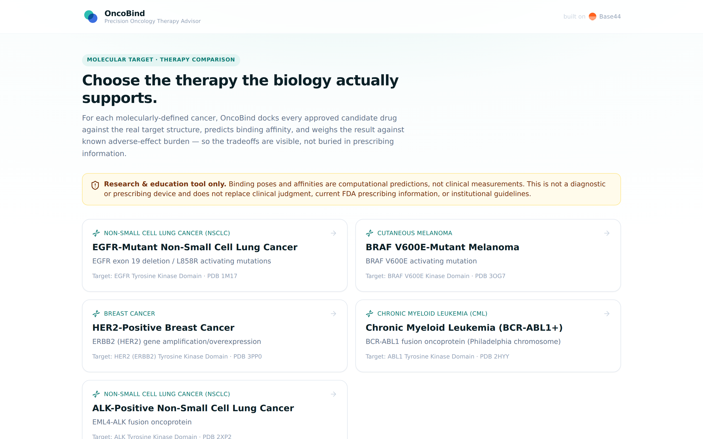
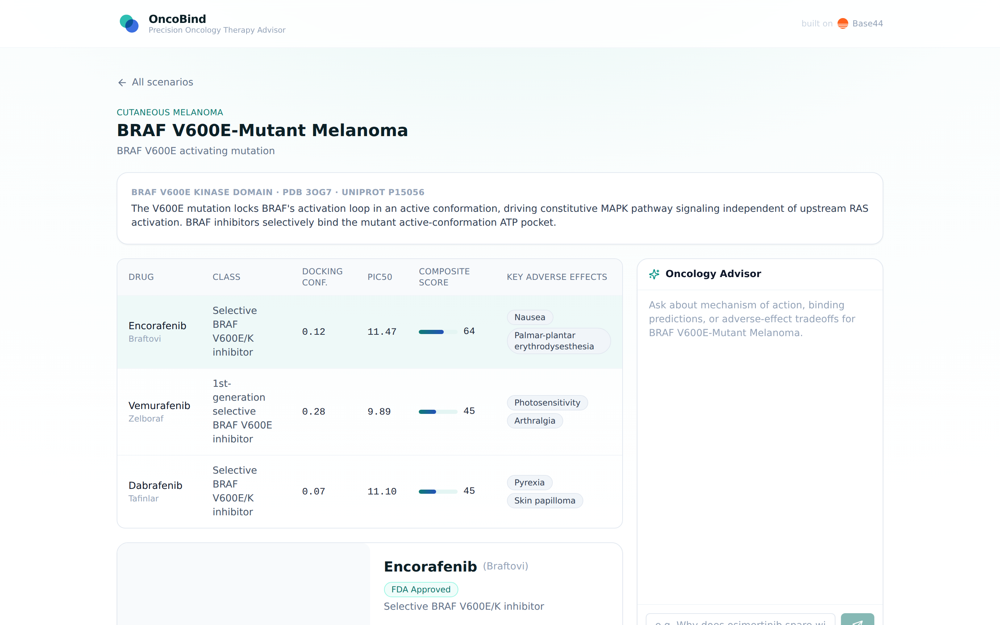

Structure-based decision support for precision oncology — helping physicians choose the targeted therapy the biology actually supports.
AlphaFold-era docking and affinity-prediction models (DiffDock, Boltz2, and peers) now return a predicted binding pose and affinity in seconds to minutes — down from weeks of wet-lab crystallography.
Hosted inference platforms (NVIDIA BioNeMo among others) put these models behind a simple API — no in-house computational chemistry team or GPU cluster required to use them.
Targeted-therapy approvals are accelerating — more kinase-inhibitor approvals in the last five years than the prior fifteen, each adding to the comparison problem.
For a diagnosed molecular subtype, OncoBind docks every approved candidate drug against the real target structure, predicts binding affinity, and combines it — transparently — with known adverse-effect burden into one comparative, explainable score.
DiffDock predicts the 3D binding pose of each candidate against the real receptor structure.
Boltz2 predicts binding affinity (pIC50) for the same ligand-target pair.
A transparent formula combines affinity, docking confidence, and adverse-effect burden.
A grounded AI advisor explains the tradeoffs in plain clinical language.

EGFR-mutant NSCLC, BRAF V600E melanoma, HER2+ breast cancer, CML, and ALK+ NSCLC — each backed by a real crystallized target structure and its full slate of approved therapies.

Physicians can ask the grounded AI advisor why a drug scored the way it did — it only cites data present in the app, never an invented number.
Unlike opaque "AI risk score" tools, OncoBind's composite score is a published, auditable formula — the same one the in-app AI advisor is instructed to explain verbatim on request.
Quantified TAM/SAM/SOM sizing to be added from a licensed market-research source before external distribution of this deck.
Per-site or per-seat subscription for health systems and oncology practices with molecular tumor boards.
Structured binding/affinity comparison data licensed to pharma medical-affairs and payer/formulary teams.
Integration into oncology EHR workflows as point-of-care clinical decision support.
Pricing, initial design-partner pipeline, and current traction to be added once pilot conversations are underway.
| Category | Strength | Gap OncoBind fills |
|---|---|---|
| Static reference tools (NCCN, Lexicomp, UpToDate) | Comprehensive, trusted, guideline-anchored | Not structural or comparative — read one drug at a time, no binding-based ranking |
| OncoBind | Structure-based, transparent, explainable per-drug scoring | — |
| Black-box AI risk tools | Data-driven, can flag risk patterns | Opaque scoring, heavy regulatory burden, no grounding in physical binding data |
OncoBind never recommends a specific prescription. Every view carries a persistent disclaimer, and the AI advisor is instructed to frame findings as considerations for the treating physician's judgment.
Current scope is explicitly a research and education decision-support tool. Binding predictions are computational, not clinically validated measurements.
Every displayed number cites its source (RCSB PDB, UniProt, PubChem, or the named prediction model) — nothing is a hidden training-data artifact.
Should the product move toward higher-stakes clinical use, its architecture — transparent scoring, sourced data, no hidden model — is the right starting point for eventual regulatory engagement.
Grow beyond the initial 5 scenarios / 17 drugs to the full set of clinically relevant targeted-therapy classes; add on-demand live docking for investigational or off-label candidates.
Validate the workflow and scoring methodology directly with a molecular tumor board.
Extend beyond oncology-target binding into patient-specific pharmacogenomic interaction data.
The same binding-prediction engine could, in principle, inform future biomarker or early-detection research — this is a speculative research direction, not a current product capability.
Founding team
Add founder bios, relevant oncology/ML/clinical-software background, and advisors here.
Current traction
Add pilot conversations, LOIs, or design-partner status here once available.
The ask
Add raise amount, instrument, and target close date here.
Use of funds
Add allocation across engineering, clinical validation, and go-to-market here.
oncobind.app · [founder email placeholder]